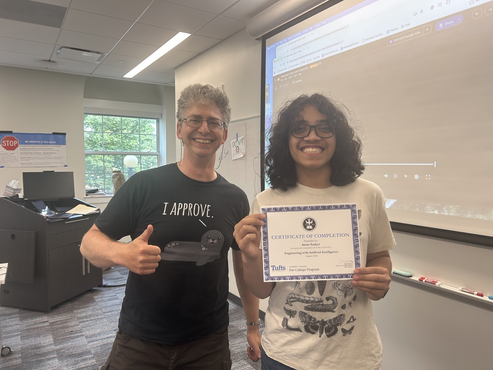
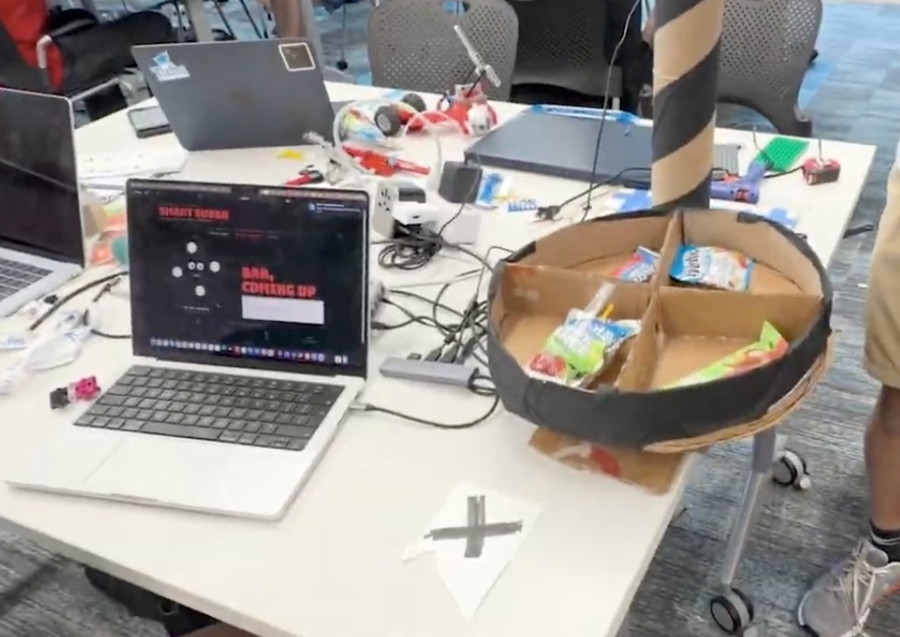

Summer Program Recap & Capstone Project Showcase

During July 2026, I attended the intensive two-week pre-college program Engineering with Artificial Intelligence (AI) at Tufts University, hosted by the Center for Engineering Education and Outreach (CEEO). The curriculum focused on building, training, and deploying real-world machine learning systems rather than just consuming them.
An AI-powered voice-commanded Lazy Susan that recognizes snacks with computer vision and automatically dispenses ("yeets") them on demand.

amio_elevenlabsI architected and implemented the real-time speech detection and streaming audio scribe pipeline using ElevenLabs' WebSocket API, allowing users to talk naturally to SmartSusan. I also built synthetic dataset generation and YOLOv8 training routines.
speech_detection_tufts.py using Python asyncio and websockets. Captured live microphone input via sounddevice at 16kHz mono PCM 16-bit, buffered audio chunks through an async queue, and streamed them to ElevenLabs' scribe_v2_realtime model using server-side Voice Activity Detection (VAD). Transcriptions are parsed on-the-fly to trigger physical dispensing commands.
data_scraper.py, background_remover.py, and dataset_generator.py) that creates synthetic training images of target snacks over varied backgrounds, trained custom YOLOv8n weights on Apple Silicon (device='mps'), and deployed live camera inference with OpenCV.
import asyncio, base64, json, websockets
import sounddevice as sd
MODEL_ID = "scribe_v2_realtime"
WS_URL = f"wss://api.elevenlabs.io/v1/speech-to-text/realtime?model_id={MODEL_ID}&commit_strategy=vad"
async def send_audio(websocket):
while True:
pcm_chunk = await audio_queue.get()
message = {
"message_type": "input_audio_chunk",
"audio_base_64": base64.b64encode(pcm_chunk).decode("utf-8")
}
await websocket.send(json.dumps(message))